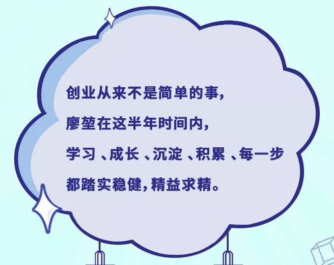
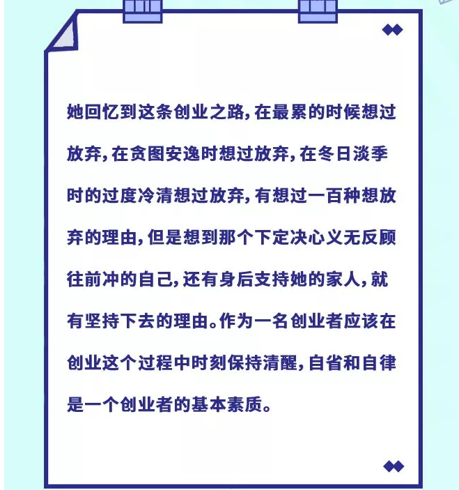

- 1
- 2

 合作条件
合作条件
 加盟流程
加盟流程
 服务支持
服务支持
 品牌优势
品牌优势
-
無谷Report |创业是一件很「酷」的事情
-
我们今天的主角也是这样一位成功者，仅仅用了半年多的时间，她就完成了一场华丽的蜕变与转身，如今成为了女性创业里的一名佼佼者。她就是湖南长沙南门口的店主，也是本期创业人物志的主人公---廖堃。
一路走来，她的执着精神与成功经验，是否能够给你带去一份前进的力量，让我们共同解读廖堃的成功之道。
最初我跟很多人一样，按照思维定式，认为一定是她对餐饮行业拥有很大的兴趣，才有如今的成就。知道听到她分享自己的经历后，才明白原来事情的版本是另外一个样子：
在父母的眼中，廖堃是个十足的乖乖女，在好友的眼中，廖堃是一个特别容易安于现状的人，大学毕业后工作了三年，所做的工作都是文职相关，拿着每月两三千的工资就可以自给自足。而事实上她有一颗不安于现状的心，一直有创业想法的她，想获得精神、财务上的自由，也想拥有一个属于自己的小事业。
2019年初，机缘巧合之下，廖堃加入无谷轻食继续她的文职工作。在进去公司大半年后，接触到公司加盟店后台的数据，了解到餐饮行业市场空间和利润很大，并且轻食是个新领域，开始在市场里慢慢普及，也被大部分消费者接受。以及公司领导人的能力和对待加盟商负责的态度，坚信跟着他们走一定不会错。她抓住这个创业机会，决定加盟无谷轻食。
恋家的她，却有一颗想出门闯荡的心，经过廖堃与无谷轻食拓展团队的市场考察，选了一个离家不远的城市----7月5日，长沙南门口店正式开张。
创业实现了她一大半的精神自由，累并快乐着，乐此不疲的做着属于自己的小事业。开店的前一个月真的觉得很难，累。平常在家是一个连扫把倒了都不会扶起的人，来到这里大大小小从店铺到证件到货物的清点采购到正常开业，所有的事情都是自己亲力亲为，第一次开店各方面不熟悉，准备的也不够充分。随着平台订单越来越多，反而从最初的兴奋到恐惧，多到做不完。骑手也催促，工作的节奏让她感觉压力倍增。
好在公司运营团队的协助与建议下，每一次给到的帮助都很及时到位，真正做到时时刻刻都在为所有加盟商服务。通过改善了备餐繁琐的步骤，让她明白不能打无准备的仗，起得早睡得晚，比别人付出更多的时间在准备工作上，最后你总能收获的比别人多。
随着对她了解的深入，我感受到那种有想法就去规划执行的决断力，她感慨到：“24岁以后的我，活出了自己的无限可能性，我也体会到了那种掌控自己生活的满足感，你想做什么，想完规划完一定要去做，只有去做才有无限的可能性。”

